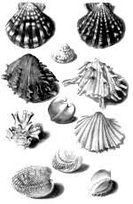
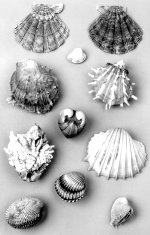

a. Contre-épreuves van de zestig platen uit: Georg Everhard Rumphius,
D’Amboinsche rariteitkamer, behelsende eene beschryvinge van alerhande zoo weeke als
harde schaalvisschen, [...] als mede allerhande hoorntjes en schulpen, [...] daar beneven
zommige mineraalen, gesteenten [...] (Amsterdam, by François Halma, 1705). Handgekleurd.
[Z.pl., na 1741.]. -- (Plano 45 D 1)
b. Elf schelpen. (Naturalis).
Voordat Georg Everhard Rumphius (1627/8-1702) in 1652 in dienst van de Verenigde Oost-Indische Compagnie trad, had hij onder andere al een periode van krijgsgevangenschap in Portugal achter de rug. Bij de ‘Loffelijke Compagnie’ was hij eerst soldaat, daarna werd hij als koopman gestationeerd op Ambon, in welke functie hij uitstekend aan zijn meerderen beviel. Rumphius vatte een zo grote liefde voor het eiland op, dat hij besloot er een uitgebreide beschrijving van te geven. Hij voltooide een deel over de flora: Het Amboinsch kruid-boek (zie nummer 102) en een over het leven in de zee: D’Amboinsche rariteitkamer.
Het zijn in vele opzichten prachtige boeken, die hem de terechte bijnaam ‘de Indische Plinius’ hebben opgeleverd, en onze bewondering ervoor stijgt nog, wanneer we weten dat in 1670 Rumphius de ergste ramp voor een natuuronderzoeker, blindheid, overkwam. Hoewel hij voor de Compagnie nutteloos was geworden, heeft zij hem toch in betaalde dienst gehouden en hem zelfs de beschikking over een klerk en een kopiist gegeven, zodat Rumphius samen met zijn zoon Paulus Augustus zijn levenswerk kon voortzetten. Daarbij bleven verdere calamiteiten hem niet bespaard: in 1687 werd zijn huis vernietigd, waarbij zijn vrouw en twee van zijn kinderen omkwamen en het grootste deel van zijn materiaal verloren ging. Gelukkig kon het verlorene gereconstrueerd worden, maar alles zou definitief bij het transport van Java naar Holland, toen het schip met zijn kostbare lading door Fransen tot zinken werd gebracht, verloren zijn geraakt, als de gouverneur-generaal Joannes Camphuis Rumphius’ manuscript niet eerst, als wijze voorzorgsmaatregel, had laten kopiëren. Voordat het in Holland tot een uitgave kwam, heeft een aantal kenners eerst naar het manuscript gekeken en het van aanvullingen voorzien. Een van de voornaamste van hen was Simon Schijnvoet, wie in het voorwoord van de uitgever daarvoor hartelijk dank wordt gezegd.
Een van de vele kanten van Rumphius’ werk, die het lezen erin zo aantrekkelijk maakt (Nieuwenhuys besteed er uitvoerig aandacht aan), is de gebruikte naamgeving. Ook bij de schelpen vinden we fraaie, helaas nooit echt in gebruik genomen namen, zoals de ‘gerimpeld oude Wyfs-Schulp’ en de ‘dubbele Zotskap-Schulp’.
De platen geven over het algemeen de schelpen en andere naturalia goed herkenbaar weer, al is het soms wel zo dat de platen spiegelbeeldig ten opzichte van de originelen zijn. Vooral bij slakken kan dat aanleiding tot misverstand geven. De meeste slakkehuisjes zijn namelijk ‘rechtsgewonden’: als men ze van boven af, wanneer de top van het huisje naar boven wijst, bekijkt, nemen ze met de wijzers van de klok mee in de breedte toe. De opening, waardoorheen de slak in- en uitschuift, bevindt zich dan rechts onderaan. Bij Rumphius (en meer oudere afbeeldingen) lijkt het bij de spiegelbeeldige platen dan zo, dat het om veel zeldzamere, linksgewonden soorten gaat. In het hier getoonde exemplaar is dat echter niet het geval: de platen zijn zogenaamde ‘contre-épreuves’, die ontstaan zijn doordat op nog natte afdrukken een nieuw vel papier wordt gelegd, dat vervolgens de natte inkt opneemt waardoor dan weer een nieuwe afdruk ontstaat, die spiegelbeeldig ten opzichte van het gebruikte ‘origineel’ is. Dit heeft tot gevolg dat wat op het ‘origineel’ in spiegelbeeld stond afgedrukt, op de ‘contre-épreuve’ in de juiste stand is afgebeeld.
Getoond is plaat 48 met de daarop afgebeelde schelpen ook in het echt:
- op de bovenste rij tweemaal Pecten nodosus L.;
- op de tweede rij Venus Paphia L.;
- op de derde rij Spondylus crassisquama Lam. en ducalis Lam.;
- op de vierde rij de versteende kern van een fossiele schelp;
- op de vijfde rij Chama Lazarus L. (damaecornis Lam.) en Cardium costatum L.;
- op de zesde rij Cardium tuberculatum L.(?); en
- op de zevende rij Cardium isocardia L. en Cytherea Dione L.
Het merkwaardige is dat Schijnvoet op deze plaat hoofdzakelijk niet-Ambonese schelpen heeft laten afbeelden: de twee Pectens komen uit West-Indië, evenals Cardium isocardia; Venus Paphia en Cytherea Dione horen thuis in Amerika, Cardium costatum is Westafrikaans en Cardium tuberculatum Europees!
Literatuur
- E. von Martens, ‘Die Mollusken (Conchylien) und die übrigen wirbellosen Thiere im Rumpf’schen Raritätkammer’, in: Rumphius gedenkboek, 1702-1902. Haarlem 1902, p. 109-136, vooral p. 129.
- Claus Nissen, Die botanische Buchillustration. Ihre Geschichte und Bibliographie. Stuttgart 1951-1966. 2 dln, nr. 3518.
- W.S.S. van Benthem Jutting, ‘Rumphius and malacology’, in: Rumphius memorial volume. Ed. by H.C.D. de Wit. Baarn 1959, p. 181-207, vooral p. 203-205.
- Rob Nieuwenhuys, Oost-Indische spiegel. Wat Nederlandse schrijvers en dichters over Indonesië hebben geschreven vanaf de eerste jaren der Compagnie tot op heden. Amsterdam 1972, p. 55-61.
| vorige pagina | top pagina |